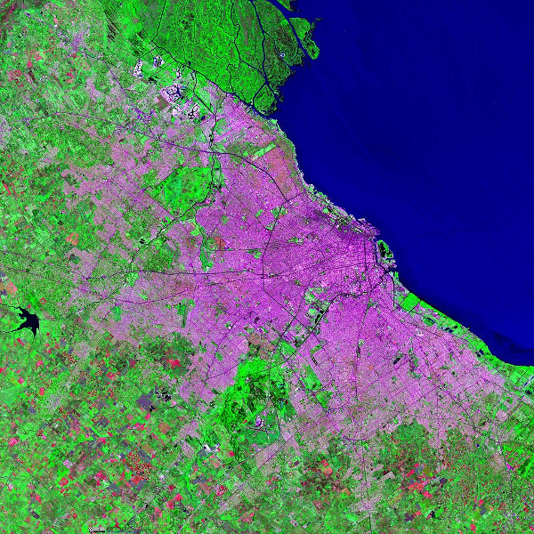

Case Studies
Etudes de Cas



Our training courses are based on concrete case studies. We focus on achieving concrete objectives rather than mastering all technical aspects of the tools.
Nos formations sont basées sur des études de cas réels. Nous nous concentrons sur l'atteinte d'objectifs concrets plutôt que sur la maîtrise de tous les aspects des outils.
We combine the expertise of two trainers for better support and effective learning.
Nous combinons l'expertise de deux formateurs pour un meilleur accompagnement et un apprentissage plus efficace.
Our training courses only require personal computers, we adapt to your place (meeting room, private house...).
Nos formations ne nécessitent que des ordinateurs personnels, nous nous adaptons à votre lieu (salle de réunion, maison...).
We focus on flexibility, whether it is on the number of learners, the tools you want to explore or the objectives and the intensity of the training.
Nous mettons l'accent sur la flexibilité, que ce soit sur le nombre d'apprenants, les outils que vous voulez explorer ou les objectifs et l'intensité de la formation.


Our two experts are both engineers and Ph. D. thesis holders. They have extensive experience in the management, analysis and visualization of geographical data.
Nos deux experts sont à la fois ingénieurs et titulaires d'une thèse de doctorat. Ils jouissent d'une vaste expérience dans la gestion, l'analyse et la visualisation de données géographiques.

Expert in Spatial Data Analytics
Expert en analyse de données spatiales
Alexandre Maugnard works as an independent consultant after more than 12 years of experience in academic research. His research has focused on the management of water and land resources using geomatics and remote sensing tools. He has developed decision-making tools for political and environmental leaders to assess the risks of flooding, water pollution and soil degradation. He has acquired expertise on the issue of spatial representation of information, changes in scale and its impact on the results of models and decision support tools. He has strong skills in many GIS software and remote sensing tools as well as programming. He has carried out projects in Europe and Africa on hydrological modelling, spatial analysis, development of decision support systems and capacity building for private companies, public administrations and international organizations such as FAO. Alexandre is an agricultural engineer from the Faculty of Agronomic Sciences of Gembloux and holds a doctorate in bio-engineering and agronomy from the catholic University of Louvain.
Alexandre Maugnard travaille comme consultant indépendant après plus de 12 ans d'expérience en recherche universitaire. Ses recherches ont porté sur la gestion des ressources en eau et en sols à l'aide d'outils de géomatique et de télédétection. Il a développé des outils d'aide à la décision pour les responsables politiques et environnementaux afin d'évaluer les risques d'inondation, de pollution des eaux et de dégradation des sols. Il a acquis une expertise sur la question de la représentation spatiale de l'information, des changements d'échelle et de son impact sur les résultats des modèles et des outils d'aide à la décision. Il possède de solides compétences dans de nombreux logiciels SIG et outils de télédétection ainsi qu'en programmation. Il a réalisé des projets en Europe et en Afrique sur la modélisation hydrologique, l'analyse spatiale, le développement de systèmes d'aide à la décision et le renforcement des capacités pour des entreprises privées, des administrations publiques et des organisations internationales comme la FAO. Alexandre est ingénieur agronome de la Faculté des Sciences Agronomiques de Gembloux et titulaire d'un doctorat en bio-ingénierie et agronomie de l'Université catholique de Louvain.

Expert in Data Innovation
Expert en Data Innovation
Damien Jacques is a freelance consultant in data innovation for development. He has led projects across the globe requiring (i) designing and implementing algorithms to extract key insights from large unstructured data, (ii) develop strategies to leverage the entire data value chain of companies and development agencies; and (iii) successfully scale up data solutions in complex and multi-stakeholder ecosystem. He has established a strong academic track record through several projects in Data Science and AI for social good (including projects in food security, poverty and agricultural economics). His projects involve the use of mobile phone data and satellite images and GIS, machine learning and geostatistics analyses in Europe, Central America and Africa. Damien work(ed) for Dalberg Data Insights, the Inter-American Bank of Development, the University of California, Los Angeles, the Free University of Brussels, and the catholic University of Louvain. He was awarded the Agriculture prize in the Data For Development (D4D) challenge organized by Orange, MIT, and the UN. Damien holds a Ph.D. in Bioengineering and Agronomy from the catholic University of Louvain.
Damien Jacques est consultant indépendant en innovation de données pour le développement. Il a mené des projets dans le monde entier, nécessitant (i) la conception et la mise en œuvre d'algorithmes pour extraire l'information pertinente de large jeux de données non structurées, (ii) l'élaboration de stratégies pour exploiter l'ensemble de la chaîne de valeur des données d'entreprises et d'agences de développement, et (iii) la mise en œuvre de solutions d'analyse de données au sein d'écosystèmes complexes et multipartites. Il a acquis une solide expérience académique grâce à plusieurs projets en science des données et en intelligence artificielle (y compris des projets en sécurité alimentaire, pauvreté et économie agricole). Ses projets impliquent l'utilisation de données de téléphonie mobile et d'images satellitaires et de SIG, l'apprentissage machine et les analyses géostatistiques en Europe, en Amérique centrale et en Afrique. Damien a travaillé pour Dalberg Data Insights, la Banque interaméricaine de développement, l'Université de Californie à Los Angeles, l'Université libre de Bruxelles et l'Université catholique de Louvain. Il a reçu le prix de l'agriculture dans le cadre du concours Données pour le développement (D4D) organisé par Orange, le MIT et l'ONU. Damien est titulaire d'un doctorat en bio-ingénierie et agronomie de l'Université catholique de Louvain.
This is the price and duration for our standard training courses
Il s'agit du prix et de la durée pour nos formations standards
The price includes training, the appointment of two experts on site and the didactic material
Le prix comprend la formation, la mise à disposition de deux experts sur site et le matériel didactique
We help you to identify the formula that best suits your needs, both in terms of the content of the training and its duration
Nous vous aidons à identifier la formule la plus adaptée à vos besoins tant au niveau du contenu de la formation que de sa durée
Contact us to learn more about our training courses or to obtain a tailor-made offer
Contactez nous pour en savoir plus sur nos formations ou obtenir une offre sur mesure